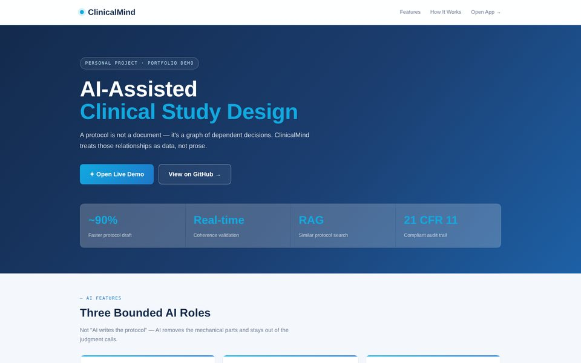
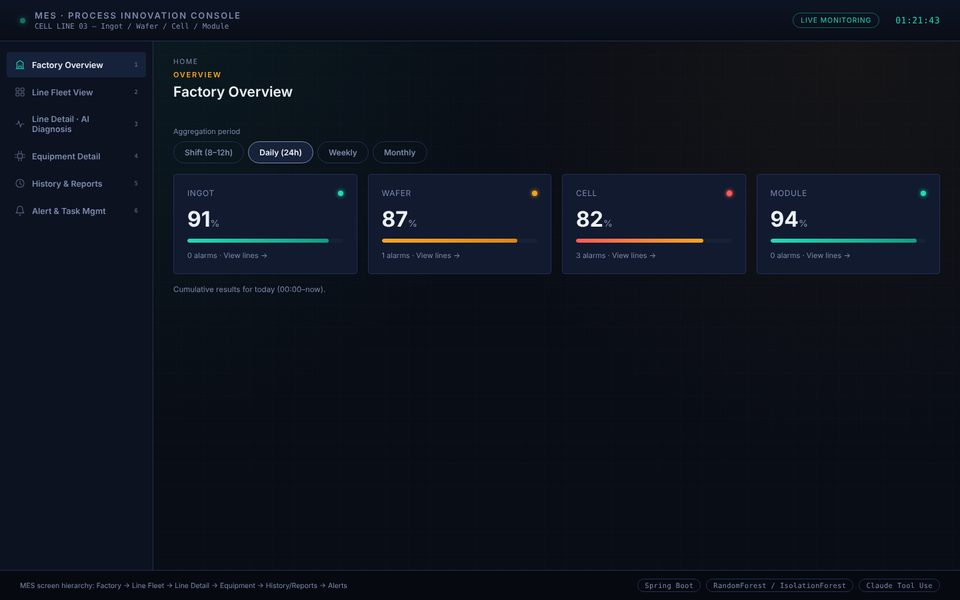
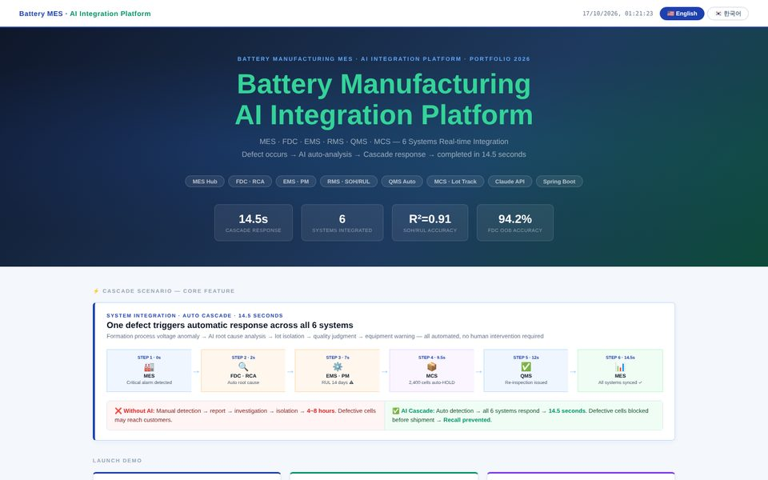
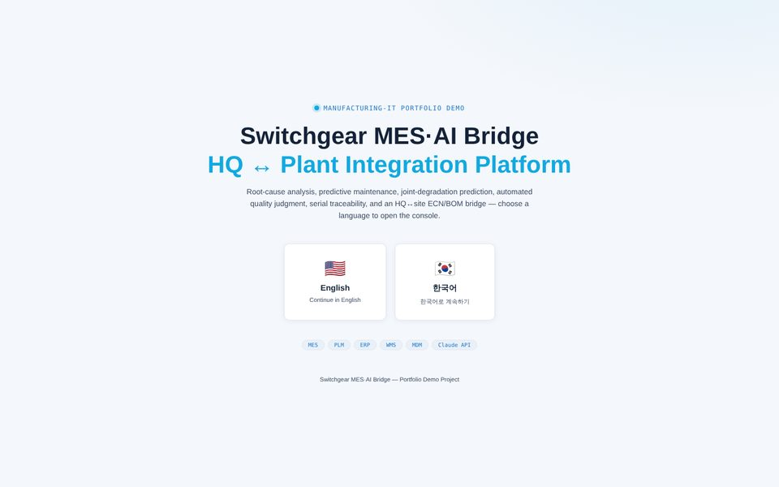

Bio
I am a software engineer with more than fifteen years of experience building and supporting systems that real operations depend on: aeronautical data for flight planning at NTT DATA in Japan, product lifecycle and semiconductor design-IP systems at Samsung Electronics, and logistics and financial platforms in the United States. My current interest is making AI dependable in high-stakes settings — decision making under uncertainty in manufacturing operations, and trustworthy use of large language models in regulated fields such as clinical research.
Languages: Korean (native) · English (professional) · Japanese (business professional, JLPT N1)
Independent AI Projects
Self-directed, non-commercial prototypes (2025 – present). Not formal academic studies or production deployments. Manufacturing prototypes use simulated data.

ClinicalMind – AI-Assisted Clinical Study Design
LLM workflows for drafting study arms, endpoints, and eligibility criteria; real-time CDISC coherence checks; retrieval-augmented search of similar protocols; audit trail designed around 21 CFR Part 11.
Open demo →
MES Process Innovation Console (Solar)
Simulated ingot-to-module manufacturing with AI-assisted root-cause analysis and predictive maintenance using Random Forest and Isolation Forest models.
Open demo →
Battery MES·AI Integration Platform
Proof-of-concept models for defect classification, anomaly detection, predictive maintenance, and battery-life estimation, with LLM-generated diagnostic explanations.
Open demo →
Switchgear MES·AI Bridge
Six-module MES/AI console modeling FDC root-cause analysis, automated HiPot failure response, QMS re-inspection, and PLM/ERP engineering-change coordination.
Open demo →Experience
RESTful APIs for LendingQB integrations, Node.js/Express services with React front ends, and automated document-generation workflows.
Led development and 24/7 support of logistics applications; ERP/WMS/TMS integrations; root-cause analysis and mentoring.
Mortgage origination and servicing applications on ASP.NET, .NET Core, C#, and SQL Server.
Real-time and offline inventory synchronization between warehouses and retail stores.
System LSI IP management system for semiconductor design-IP reuse; enterprise PLM with configurable and intelligent BOM.
Aeronautical Information Publication system; validation of flight routes, navigation aids, and airspace data on the AIRAC cycle.
Earlier: Daegu Bank, PV Technology, Korea Post Information Center, LG Hitachi, Nexon Mobile, Neobill, Moazio (2005 – 2016). Full details in the CV.
Education
Certifications
| Certification | Issuer | Date |
|---|---|---|
| Japanese-Language Proficiency Test, Level N1 | Japan Foundation / JEES | Jan 2014 |
| Oracle Database 10g Administrator Certified Professional (OCP) | Oracle | Aug 2010 |
| Sun Certified Business Component Developer (SCBCD), Java EE 5 | Sun Microsystems | May 2010 |
| Sun Certified Web Component Developer (SCWCD), Java EE 5 | Sun Microsystems | Apr 2010 |
| Sun Certified Programmer (SCJP), Java 2 Platform SE 5.0 | Sun Microsystems | Apr 2010 |
Military service: Republic of Korea Air Force, full term completed.